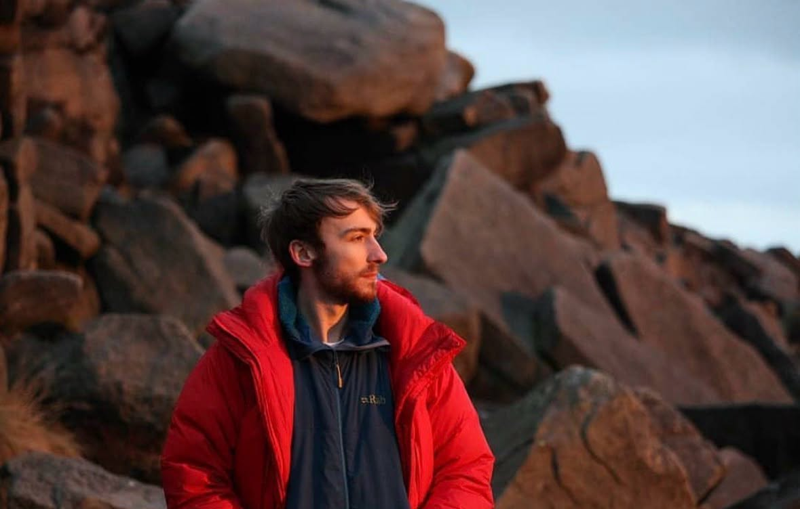

Confidential and Compassionate Psychotherapy
A calm, reflective space to explore what feels difficult, make sense of your experiences, and move towards greater clarity, ease and balance.
As an integrative psychotherapist, I offer thoughtful and tailored support to you - without pressure to perform, explaining yourself perfectly, or having all the answers.
Book an initial consultationAbout My Practice
As an Integrative Therapist, I am trained to draw from multiple therapeutic models. People seek therapy for many reasons, this allows me to adapt my therapeutic work to suit you rather than using one single model.
I offer one-to-one psychotherapy for adults (18+), both online and in person. My approach is empathetic, eclectic and thoughtful, grounded in evidence-based practice and informed by an understanding of how past experiences shape present patterns. Therapy isn't about being fixed but developing a greater awareness to support meaningful and lasting change.
Therapy with me offers a consistent, confidential, and non-judgemental space. I aim to create a collaborative relationship where you feel heard, understood, and respected. We will work at a pace that feels manageable for you, allowing room to explore difficult experiences while building insight, resilience, and self-compassion.
My clinical training has involved working with a diverse range of clients across a broad spectrum of challenges. I have experience working with individuals who have been affected by harm as well as those who have engaged in harmful behaviours. Generally, my support involves the following:
- Psychological Difficulties (addiction, anxiety, depression, personality, eating disorders, attachment, trauma)
- Relational Difficulties
- Emotional Difficulties (Feeling stuck or lost, bereavement, self-esteem, motivation, challenges surrounding identity or life transitions)
About me

"I need solitude, which is to say, recovery, return to myself, the breath of a free, light, playful air."
I hold a MSc degree in Integrative Counselling and Psychotherapy alongside a BSc Psychology and sport coaching background, providing a strong foundation in psychological theory, research, and evidence-based practice.
I work with care, clarity, and strong professional boundaries, offering a reliable therapeutic relationship as the foundation for change. I am committed to ongoing professional development and reflective practice to ensure the highest standard of care, adhering to the ethical framework of the BACP.
Client Review
"I've had therapy with Andy on a weekly to bi-weekly basis for roughly half a year now, I cannot stress how much change I've seen to my life. It has brought me much more peace and greater well being going through these sessions and putting in the work set outside of them and I feel much more like myself and more confident than I have in a long long time."
Services
Individual psychotherapy
Ongoing, open-ended therapy tailored to your needs. My rate is £40 for a theraputic hour with concessions available. Sessions are usually weekly and provide space to explore experiences in depth.
Short-term therapy
Time-limited work centering around a specific symptom, issue or period of difficulty, with clear aims and collaborative structured sessions.
Online sessions
Secure video sessions offering flexibility and accessibility, while maintaining the same therapeutic care and attention.
Start Your Therapy Journey
If you are considering whether therapy is for you, would like to enquire about availability, or want to explore if we might work well together, I welcome you to get in touch. You can arrange a free consultation for a time that best suits you.
The initial consultation offers an opportunity to talk about what brings you to therapy and to get a sense of whether this way of working feels right for you.
Email: andymyerspsych@hotmail.com